import numpy as np
import matplotlib.pyplot as plt
import matplotlib.image as mpimg
import matplotlib.pyplot as plt
from mpl_toolkits.mplot3d.art3d import Poly3DCollectionLab 1: Linear Transformations
MATH 252: Applied Linear Algebra
Data Preparation
First of all, I decided to follow the rules and use only NumPy and Matplotlib for this project.
NumPy helps with handling numerical data and arrays, while Matplotlib is used for visualizing results.
Keeping it simple with just these two libraries makes the workflow clean and focused.
To make the lab more fun and visually appealing, I chose an image of a cat — because a cat is always a good sign. 🐱
Code
img = mpimg.imread('image.png')
plt.imshow(img, cmap='gray')
plt.grid(True, color='lightgray', linestyle='--', linewidth=0.5)
plt.show()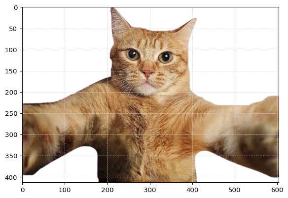
Since I chose an image, the data was stored as a 3D array containing RGB values.
Because of that, I couldn’t apply matrix multiplication directly.
[[[0. 0. 0. 0. ]
[0. 0. 0. 0. ]
[0. 0. 0. 0. ]
...
[0. 0. 0. 0. ]
[0. 0. 0. 0. ]
[0. 0. 0. 0. ]]
[[0. 0. 0. 0. ]
[0. 0. 0. 0. ]
[0. 0. 0. 0. ]
...
[0. 0. 0. 0. ]
[1. 1. 1. 0.00392157]
[1. 1. 1. 0.00392157]]
[[0. 0. 0. 0. ]
[0. 0. 0. 0. ]
[1. 1. 1. 0.00392157]
...
[0. 0. 0. 0. ]
[0. 0. 0. 0. ]
[0. 0. 0. 0. ]]
...
[[0. 0. 0. 0. ]
[0. 0. 0. 0. ]
[0. 0. 0. 0. ]
...
[0. 0. 0. 0. ]
[0. 0. 0. 0. ]
[0. 0. 0. 0. ]]
[[0. 0. 0. 0. ]
[0. 0. 0. 0. ]
[1. 1. 1. 0.00392157]
...
[0. 0. 0. 0. ]
[0. 0. 0. 0. ]
[0. 0. 0. 0. ]]
[[0. 0. 0. 0. ]
[0. 0. 0. 0. ]
[0. 0. 0. 0. ]
...
[0. 0. 0. 0. ]
[1. 1. 1. 0.00392157]
[0. 0. 0. 0. ]]]
So, I created a function that transforms the 3D image array into a matrix that looks like this:
[ \[\begin{bmatrix} x_{1} & x_{2} & x_{3} & \dots & x_{n} \\ y_{1} & y_{2} & y_{3} & \dots & y_{n} \\ r_{1} & r_{2} & r_{3} & \dots & r_{n} \\ g_{1} & g_{2} & g_{3} & \dots & g_{n} \\ b_{1} & b_{2} & b_{3} & \dots & b_{n} \\ t_{1} & t_{2} & t_{3} & \dots & t_{n} \end{bmatrix}\]]
Here, x and y represent pixel coordinates,
r, g, and b correspond to the color channels,
and t stands for transparency :)
def img_3d_to_2d(array):
H, W, C = array.shape
x = np.tile(np.arange(W), H)
y = np.repeat(np.arange(H), W)
rgb = array.reshape(H * W, C)
r = rgb[:, 0]
g = rgb[:, 1]
b = rgb[:, 2]
t = rgb[:, 3]
output_array = np.stack([
x, y, r, g, b, t
])
return output_arrayIf you’re curious, I also made a small visualization function that keeps the code cleaner and makes it easier to display results.
Code
def vizualization_2d(array):
colors = np.stack([array[2], array[3], array[4], array[5]], axis=1)
plt.scatter(
array[0],
array[1],
c=colors,
s=10
)
plt.gca().invert_yaxis()
plt.axis('equal')
plt.show()Thank God I’ve finally reached the easier part of this lab — the lab itself! 🎉
Task 1
Write a function for each type of linear transformation:
stretch(X, a, b),shear(X, a, b),reflection(X, a, b),rotation(X, θ)…
Stretch
The stretch transformation scales the object along the x and y axes by factors a and b, respectively.
It changes the proportions of the image without altering its orientation.
The transformation matrix looks like this:
\[ S(a, b) = \begin{bmatrix} a & 0 & 0 & 0 & 0 & 0 \\ 0 & b & 0 & 0 & 0 & 0 \\ 0 & 0 & 1 & 0 & 0 & 0 \\ 0 & 0 & 0 & 1 & 0 & 0 \\ 0 & 0 & 0 & 0 & 1 & 0 \\ 0 & 0 & 0 & 0 & 0 & 1 \end{bmatrix} \]
When this matrix multiplies the coordinate matrix (X),
it stretches all x-coordinates by (a) and all y-coordinates by (b):
\[ X' = S(a,b) \cdot X \]
def stretch(X,a,b):
X = X if len(X.shape) == 2 else img_3d_to_2d(X)
return np.diag(np.array([a, b, 1, 1, 1, 1 ])) @ XCode
vizualization_2d(stretch(k,3,0.6))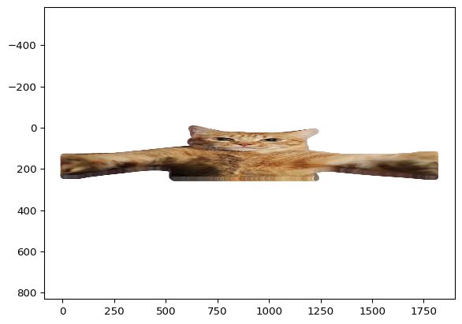
Shear
The shear transformation slants the shape of an object either horizontally or vertically.
It shifts one coordinate axis in proportion to the other, while keeping the areas parallel to the origin unchanged.
The transformation matrix looks like this:
\[ H(a, b) = \begin{bmatrix} 1 & a & 0 & 0 & 0 & 0 \\ b & 1 & 0 & 0 & 0 & 0 \\ 0 & 0 & 1 & 0 & 0 & 0 \\ 0 & 0 & 0 & 1 & 0 & 0 \\ 0 & 0 & 0 & 0 & 1 & 0 \\ 0 & 0 & 0 & 0 & 0 & 1 \end{bmatrix} \]
When this matrix multiplies the coordinate matrix ( X ),
it slants the image by factors ( a ) (horizontal shear) and ( b ) (vertical shear):
\[ X' = H(a,b) \cdot X \]
def shear(X, a, b):
X = X if len(X.shape) == 2 else img_3d_to_2d(X)
M = np.eye(6, dtype=float)
M[0, 1] = a
M[1, 0] = b
return M @ XCode
vizualization_2d(shear(k,0.5, 0.8))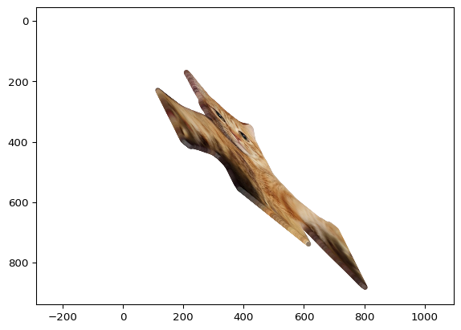
As you can see from the graph, the image appears on the left side instead of the right.
This happens because pixel coordinates in images start counting from zero — the top-left corner is considered the origin ((0, 0)).
If you look closely at the y-axis, you’ll also notice it’s flipped.
That’s because most image libraries (like Matplotlib) store pixel data starting from the top row and move downward as y increases.
In contrast, standard mathematical coordinate systems usually have the origin at the bottom-left, with y increasing upward.
So when we visualize the image data in a mathematical context, it naturally looks mirrored or inverted along the y-axis unless we explicitly reverse it.
Rotation
The rotation transformation turns the object around the origin by a given angle ( ).
In this case, the rotation is applied in the 2D plane (x, y), while the other components remain unchanged.
The transformation matrix looks like this:
\[ R(\theta) = \begin{bmatrix} \cos(\theta) & -\sin(\theta) & 0 & 0 & 0 & 0 \\ \sin(\theta) & \cos(\theta) & 0 & 0 & 0 & 0 \\ 0 & 0 & 1 & 0 & 0 & 0 \\ 0 & 0 & 0 & 1 & 0 & 0 \\ 0 & 0 & 0 & 0 & 1 & 0 \\ 0 & 0 & 0 & 0 & 0 & 1 \end{bmatrix} \]
When this matrix multiplies the coordinate matrix ( X ),
it rotates all points by an angle ( ) (in degrees) around the origin:
\[ X' = R(\theta) \cdot X \]
def rotation(X, teta):
X = X if len(X.shape) == 2 else img_3d_to_2d(X)
angle = np.deg2rad(teta)
M = np.diag(np.array([np.cos(angle), np.cos(angle), 1, 1, 1, 1 ]))
M[0, 1] = - np.sin(angle)
M[1, 0] = np.sin(angle)
return M @ XCode
vizualization_2d(rotation(k, 45))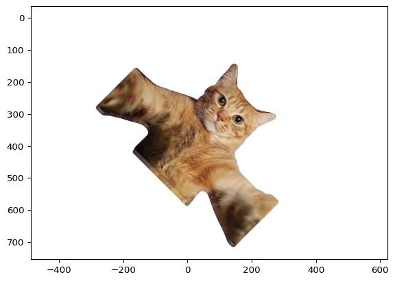
Reflection
The reflection transformation mirrors the object across a line that passes through the origin.
This line can be defined by the equation ( ax + by = 0 ),
where ( a ) and ( b ) determine its orientation.
The transformation matrix for reflection is:
\[ R_f(a, b) = \frac{1}{a^2 + b^2} \begin{bmatrix} a^2 - b^2 & 2ab & 0 & 0 & 0 & 0 \\ 2ab & b^2 - a^2 & 0 & 0 & 0 & 0 \\ 0 & 0 & 1 & 0 & 0 & 0 \\ 0 & 0 & 0 & 1 & 0 & 0 \\ 0 & 0 & 0 & 0 & 1 & 0 \\ 0 & 0 & 0 & 0 & 0 & 1 \end{bmatrix} \]
When this matrix multiplies the coordinate matrix ( X ),
it reflects all points across the line ( ax + by = 0 ):
\[ X' = R_f(a,b) \cdot X \]
def reflection(X,a,b):
X = X if len(X.shape) == 2 else img_3d_to_2d(X)
M = np.diag(np.array([a**2 - b**2, b**2 - a**2, 1, 1, 1, 1 ]))
M[0, 1] = 2*a*b
M[1, 0] = 2*a*b
M[0:2, 0:2] = (1/(a**2 + b**2)) * M[0:2, 0:2]
return M @ XCode
vizualization_2d(reflection(k, 1, 1))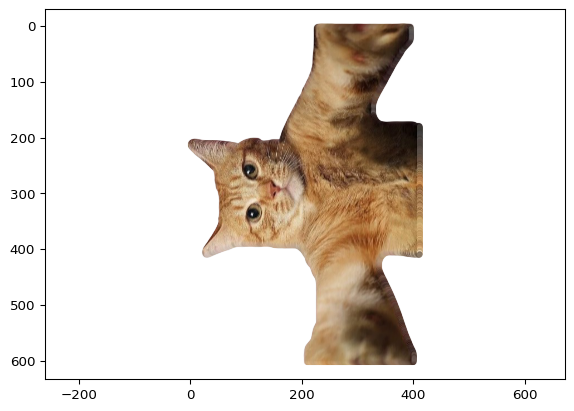
🧩 Task 2
Take the data points and apply a combination of Stretch, Shear, and Rotation transformations.
Change the order of transformations several times (at least three).
Does the final result depend on the order of transformations?After each transformation, output both the resulting image and its matrix.
Comparison of Different Transformation Orders
To understand the effect of the order of transformations, I applied the same three transformations (rotation, stretch, shear) in three different sequences:
Code
q = stretch(shear(rotation(k, 45), 3, 5), 0.6, 2)
l = shear(stretch(rotation(k, 45), 0.6, 2), 3, 5)
m = rotation(stretch(shear(k, 3, 5), 0.6, 2), 45)
all_x = np.concatenate([q[0], l[0], m[0]])
all_y = np.concatenate([q[1], l[1], m[1]])
x_min, x_max = all_x.min(), all_x.max()
y_min, y_max = all_y.min(), all_y.max()
fig, axes = plt.subplots(1, 3, figsize=(18, 6))
for ax, arr, title in zip(axes, [q, l, m], ['q: Rotate → Shear → Stretch',
'l: Rotate → Stretch → Shear',
'm: Shear → Stretch → Rotate']):
colors = np.stack([arr[2], arr[3], arr[4], arr[5]], axis=1)
ax.scatter(arr[0], arr[1], c=colors, s=10)
ax.invert_yaxis()
ax.set_aspect('equal')
ax.set_xlim(x_min, x_max)
ax.set_ylim(y_min, y_max)
ax.set_title(title)
ax.grid(True, color='lightgray', linestyle='--', linewidth=0.5)
plt.tight_layout()
plt.show()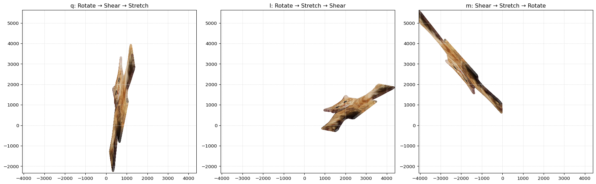
Consequences of Transformation Order ⚡
From q, l, and m, we see:
- Order Matters 🔄
- Different sequences give different final images — 2D linear transformations are non-commutative.
- Shape Changes 🎨
- Stretching, shearing, and rotating in different orders distorts the shape in distinct ways.
- Planning is Key 🛠️
- The sequence of operations affects the outcome, so careful design is essential.
Takeaway:
The order of transformations directly impacts the final shape, so it cannot be ignored. ✅
Comparison of First 4 Columns of Transformation Matrices
To better understand how the order of transformations affects the data,
we can look at the first 4 columns of each transformed matrix (q, l, m).
Each table represents the first four components of all points after the transformations.
| 0 | 1 | 2 | 3 | |
|---|---|---|---|---|
| 0 | 0.0 | 1.697056 | 3.394113 | 5.091169 |
| 1 | 0.0 | 8.485281 | 16.970563 | 25.455844 |
| 2 | 0.0 | 0.000000 | 0.000000 | 0.000000 |
| 3 | 0.0 | 0.000000 | 0.000000 | 0.000000 |
| 4 | 0.0 | 0.000000 | 0.000000 | 0.000000 |
| 5 | 0.0 | 0.000000 | 0.000000 | 0.000000 |
| 0 | 1 | 2 | 3 | |
|---|---|---|---|---|
| 0 | 0.0 | 4.666905 | 9.333810 | 14.000714 |
| 1 | 0.0 | 3.535534 | 7.071068 | 10.606602 |
| 2 | 0.0 | 0.000000 | 0.000000 | 0.000000 |
| 3 | 0.0 | 0.000000 | 0.000000 | 0.000000 |
| 4 | 0.0 | 0.000000 | 0.000000 | 0.000000 |
| 5 | 0.0 | 0.000000 | 0.000000 | 0.000000 |
| 0 | 1 | 2 | 3 | |
|---|---|---|---|---|
| 0 | 0.0 | -6.646804 | -13.293607 | -19.940411 |
| 1 | 0.0 | 7.495332 | 14.990664 | 22.485996 |
| 2 | 0.0 | 0.000000 | 0.000000 | 0.000000 |
| 3 | 0.0 | 0.000000 | 0.000000 | 0.000000 |
| 4 | 0.0 | 0.000000 | 0.000000 | 0.000000 |
| 5 | 0.0 | 0.000000 | 0.000000 | 0.000000 |
🧩 Task 3
Write a function for each 3-D rotation (rotate_xy(X,θ), rotate_yz(X,θ), rotate_xz(X,θ)).
Each function should accept an array to transform and the angle for the rotation.
Construct the matrix representation, multiply it with the input array, and return the transformed data.
Make sure to copy the array before transforming it.
After each transformation, output both the resulting image and its matrix.
🧠 Choice of Object
Out of 40 possible 3-D objects, I decided to use the kitchen sink 🪠 for this task.
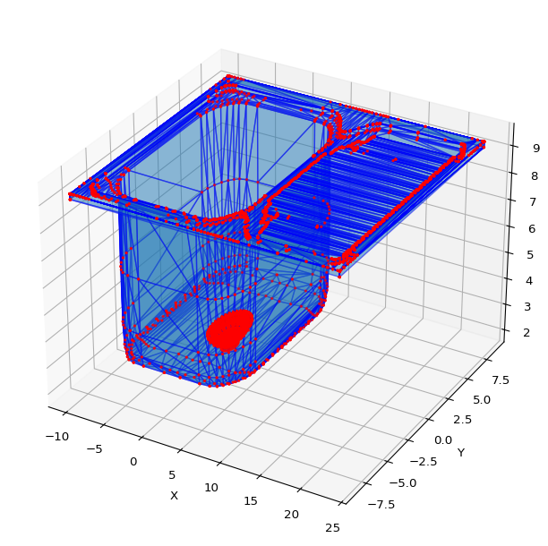
🔁 rotate_xy(X, θ)
This function performs a 3D rotation in the XY-plane (rotation around the Z-axis) by an angle ( ).
The input array ( X ) is multiplied by the corresponding rotation matrix.
\[ R_{xy}(\theta) = \begin{bmatrix} \cos\theta & -\sin\theta & 0 \\ \sin\theta & \cos\theta & 0 \\ 0 & 0 & 1 \end{bmatrix} \]
The rotated coordinates are computed as:
\[ X' = X \cdot R_{xy}(\theta) \]
where:
- ( X ) — original 3D points
- ( ) — rotation angle (in degrees)
- ( X’ ) — transformed (rotated) points
def rotate_xy (X,teta):
angle = np.deg2rad(teta)
M = np.diag(np.array([np.cos(angle), np.cos(angle), 1 ]))
M[0, 1] = - np.sin(angle)
M[1, 0] = np.sin(angle)
return X @ MCode
plot_off(rotate_xy(vertices, 45), faces)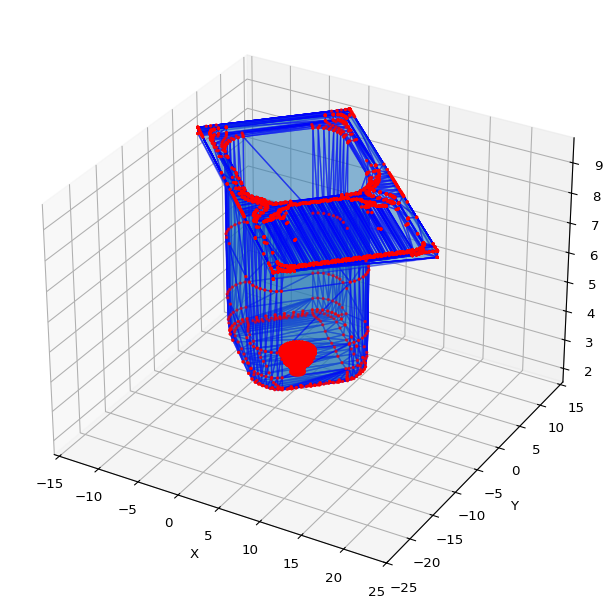
🔁 rotate_yz(X, θ)
This function performs a 3D rotation in the YZ-plane (rotation around the X-axis) by an angle ( ).
The function constructs the rotation matrix and multiplies it by the input array ( X ).
\[ R_{yz}(\theta) = \begin{bmatrix} 1 & 0 & 0 \\ 0 & \cos\theta & -\sin\theta \\ 0 & \sin\theta & \cos\theta \end{bmatrix} \]
The rotated points are computed as:
\[ X' = X \cdot R_{yz}(\theta) \]
where:
- ( X ) — original 3D coordinates
- ( ) — rotation angle (in degrees)
- ( X’ ) — transformed coordinates after rotation in the YZ-plane
def rotate_yz (X,teta):
angle = np.deg2rad(teta)
M = np.diag(np.array([1, np.cos(angle), np.cos(angle)]))
M[1, 2] = - np.sin(angle)
M[2, 1] = np.sin(angle)
return X @ MCode
plot_off(rotate_yz(vertices, 90), faces)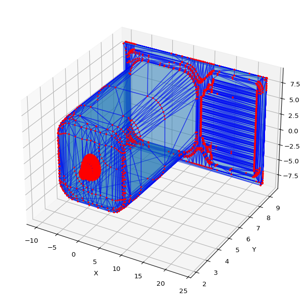
🔁 rotate_xz(X, θ)
This function performs a 3D rotation in the XZ-plane (rotation around the Y-axis) by an angle ( ).
It constructs the rotation matrix and multiplies it by the input array ( X ).
\[ R_{xz}(\theta) = \begin{bmatrix} \cos\theta & 0 & -\sin\theta \\ 0 & 1 & 0 \\ \sin\theta & 0 & \cos\theta \end{bmatrix} \]
The rotated coordinates are given by:
\[ X' = X \cdot R_{xz}(\theta) \]
where:
- ( X ) — input 3D points
- ( ) — rotation angle (in degrees)
- ( X’ ) — resulting rotated points in the XZ-plane
def rotate_xz (X,teta):
angle = np.deg2rad(teta)
M = np.diag(np.array([np.cos(angle), 1, np.cos(angle)]))
M[0, 2] = - np.sin(angle)
M[2, 0] = np.sin(angle)
return X @ MCode
plot_off(rotate_xz(vertices, 90), faces)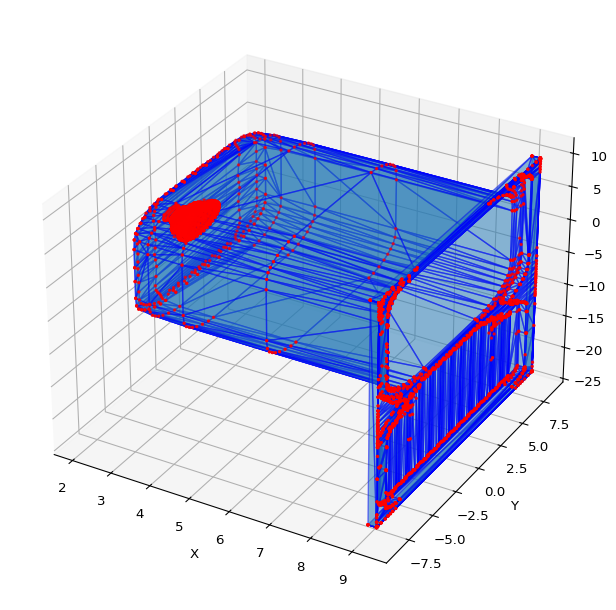
🧭 3D Rotation Comparison
In this experiment, we applied rotations in the XY, YZ, and XZ planes to a 3D object (🪠 kitchen sink).
Each transformation uses the same rotation angles but in different orders, to visualize how non-commutative 3D rotations behave.
Below are three versions of the same model, each transformed in a unique sequence of rotations:
Code
a = rotate_xz(rotate_yz(rotate_xy(vertices, 45), 70), 60)
b = rotate_yz(rotate_xy(rotate_xz(vertices, 60), 45), 70)
c = rotate_xy(rotate_xz(rotate_yz(vertices, 70), 60), 45)
all_vertices = np.vstack([a, b, c])
x_min, x_max = all_vertices[:, 0].min(), all_vertices[:, 0].max()
y_min, y_max = all_vertices[:, 1].min(), all_vertices[:, 1].max()
z_min, z_max = all_vertices[:, 2].min(), all_vertices[:, 2].max()
fig = plt.figure(figsize=(18, 6))
titles = [
"a: Rotate XY → YZ → XZ",
"b: Rotate XZ → XY → YZ",
"c: Rotate YZ → XZ → XY"
]
for i, (verts, title) in enumerate(zip([a, b, c], titles), start=1):
ax = fig.add_subplot(1, 3, i, projection='3d')
mesh = Poly3DCollection([verts[face] for face in faces],
alpha=0.3, edgecolor='k')
ax.add_collection3d(mesh)
ax.scatter(verts[:, 0], verts[:, 1], verts[:, 2], s=3, c='r')
ax.set_xlim(x_min, x_max)
ax.set_ylim(y_min, y_max)
ax.set_zlim(z_min, z_max)
ax.set_title(title, fontsize=10)
ax.set_xlabel("X")
ax.set_ylabel("Y")
ax.set_zlabel("Z")
plt.tight_layout()
plt.show()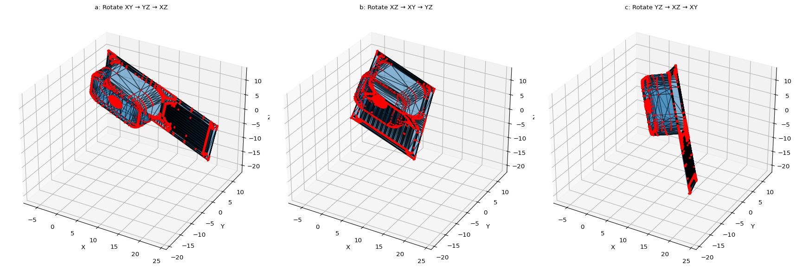
🔍 Observations and Conclusions
- The resulting orientations are visibly different, even though the same three angles were used.
- This confirms that 3D rotations are non-commutative — changing the order changes the outcome.
- Each rotation affects the coordinate frame used for the next, creating a unique final orientation.
👉 Key takeaway:
When combining multiple 3D rotations, the order of operations directly determines the final position and orientation of the object.
🎉 The End
If you’ve read this far — congratulations! 🥳
You’ve reached the end of this lab.
We explored how 2D and 3D transformations behave, discovered the importance of order, and visualized how mathematics shapes geometry in space.
Keep rotating — both objects and ideas! 🔁✨